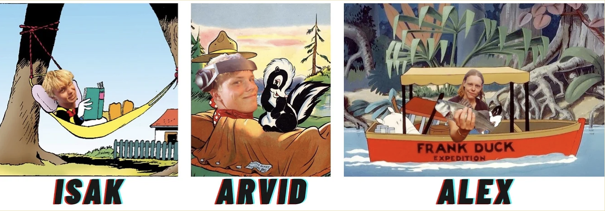
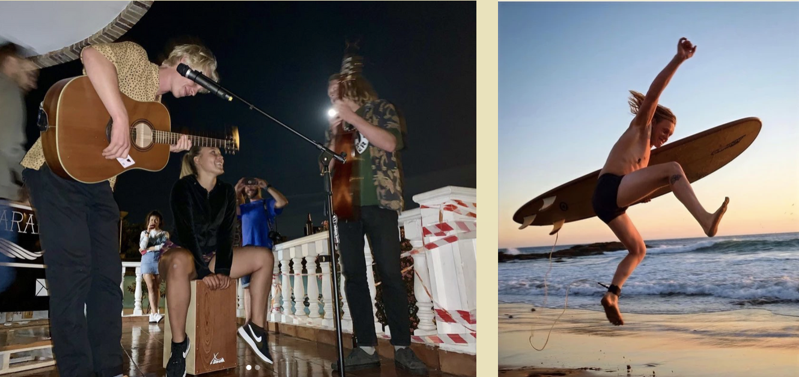
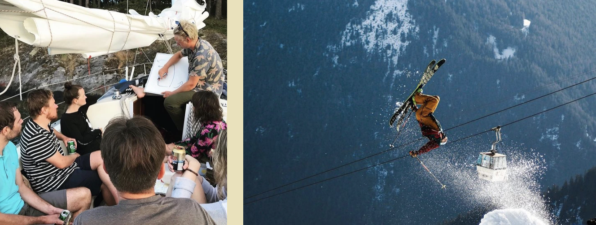
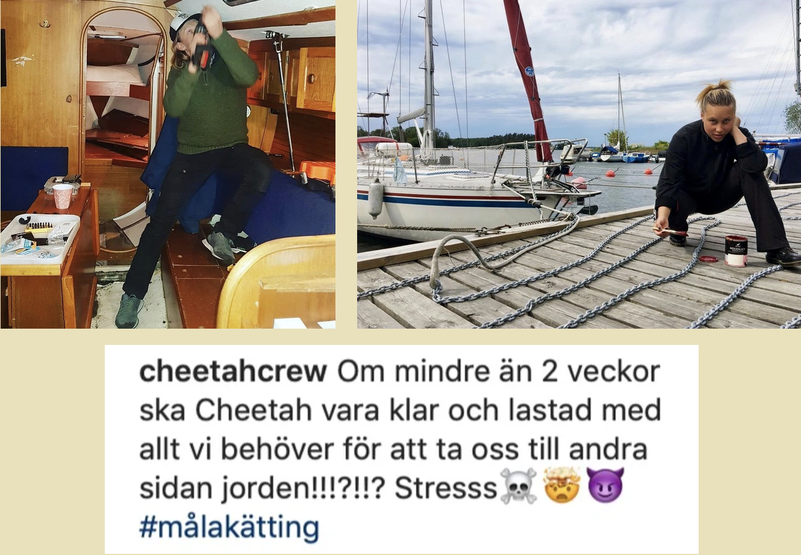
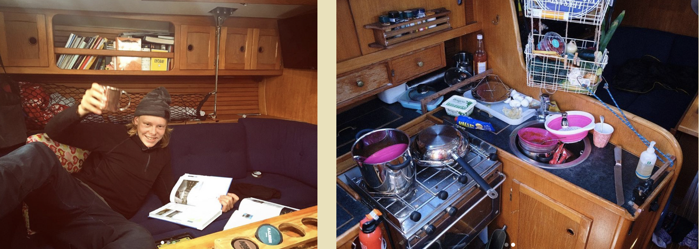
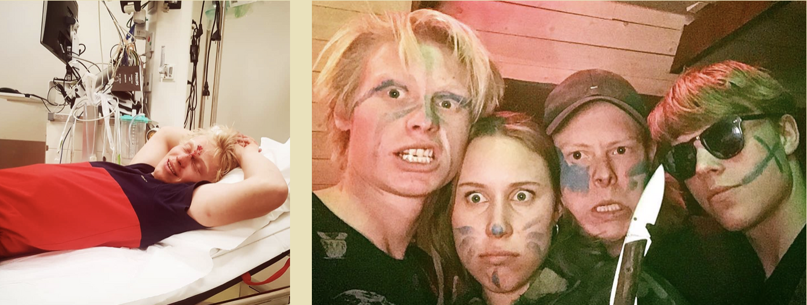
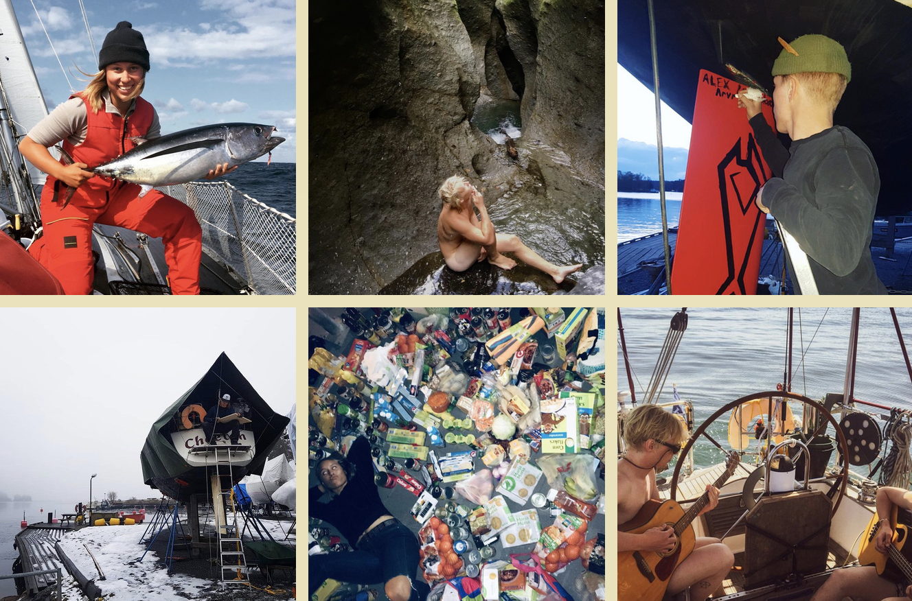

Intervjuer med kreativa människor som delar med sig av egna tankar och erfarenheter

Cheetah Crew
På 37 fotaren Cheeatah bor tre unga seglare, alla under 24 år. Äventyr är inget nytt för kompisarna. Att testa sina gränser och spendera tid i naturen har alltid varit en självklar del av deras liv och umgänge. Man hittar dem vanligtvis på havet, i skogen, bland vågorna och på snöklädda berg. Den äventyrliga kryddan ser ut att vara huvudingrediensen i grytan av alla de aktiviteter killarna ägnar sig åt. Det stora äventyret har varit en dröm sedan länge och på havet trivs de som ingen annanstans. Arvid tillägger dock i slutet av intervjun att han saknar sin tjej hemma i Sverige. Isak kontrar med att lite snö inte skulle vara fel och tillägger att lillebror Alex ibland saknar sin hund Doris. Med undantag av några få detaljer är de alltså helnöjda med tillvaron.
Instagram: @cheetahcrew | Youtube: @cheetahcrew
Vilka är besättningen på Cheetah?
I grunden består besättningen av mig (Isak), Alex och Arvid. I vanliga fall är även vår kompis Clara med på båten, men inte för tillfället. Jag och Alex är bröder och Arvid lärde jag känna i slutet av mellanstadiet. Just nu har vi sällskap av kompisen Marc från Tyskland som ska segla med oss från Mexico. Det har varit ytterligare vänner som tidigare följt med på båten under olika sträckor. Det finns ingen självstyrning vilket gör att det alltid behöver vara någon som sitter vid rodret. En del seglare väljer att ta med betalande besättning. Det har inte varit aktuellt för oss än eftersom vi haft bekanta som varit intresserade av att föla med. Att vara flera på båten är i vilket fall både trevligt och underlättar arbetet.
Hur skulle ni beskriva varandra?
Vi har många gemensamma intressen och samtidigt våra olika egenheter och kunskapsområden. I gruppen är Isak den ansvarsfulle storebrodern, Arvid den passionerade naturälskaren och Alex den klassiska äventyraren. En riktigt bra trio helt enkelt.

Vilka intressen har ni förutom segling?
Vi gillar det mesta som innefattar någon form av äventyr. Under vintrarna har vi åkt mycket skidor och även arbetat som skidinstruktörer. I varmare klimat föredrar vi vågsurfing. Det är utmaningar och natur som lockar. Vi gillar att vandra, tälta och upptäcka nya platser. Ett annat intresse vi delar är musiken. Hemma i Sverige har vi ett band som ibland spelar på mindre fester och tillställningar. Tyvärr har musiken blivit ett sådant projekt som alltid hamnar på paus på grund av andra aktiviteter.

När kom seglingen in i era liv?
Jag Isak och min bror Alex har seglat sedan barnsben, både jolle och större båt med familjen. Arvid började segla i och med sin gymnasieutbildning på Marina Läroverket i Danderyd. Där seglas både mindre båtar och senare ett större skepp från Spanien till Kanarieöarna. Innan dess körde han en del motorbåt och var på det sättet bekant med vatten och sjöliv. Havet har alltid varit närvarande i våra liv på olika sätt.
Hur blev idén om resan till?
Det var under efter en vandring i skogen vi fick känsla för ytterligare och större äventyr. Vi började diskutera om att eventuellt göra en längre bilresa tillsammans. Bil är praktiskt inom vissa distanser med det var dessvärre många och utspridda platser vi ville besöka. Att flyga kors och tvärs är något vi helst undviker ur ett hållbarhetsperspektiv. Det är väldigt motsägelsefullt att vilja uppleva naturen och samtidigt bidra till miljöförstöring. Att segla var med andra ord det självklara alternativet. Det är viktigt för oss att resa och leva hållbart ombord.
Instagram: @cheetahcrew | Youtube: @cheetahcrew
Hur levde ni innan långseglingen?
Livet var som många andras efter gymnasiet. Vi hade olika jobb och umgicks med vänner. Jag (Arvid) drog in pengar som båtmekaniker medan Isak och Alex hade olika jobb som bland annat segling- och skidinstruktörer. Samtidigt la vi mycket tid på att rusta båten och förbereda oss inför resan genom kurser och planritningar.

Vad är planen för resan?
Agendan är att segla jorden runt. Det är dock svårt att göra en definitiv plan på grund av pandemin som ibland begränsar oss. Det finns många platser vi vill besöka men förstår att det finns ytterligare aspekter och numera restriktioner att ta hänsyn till. Vi tar situationen som den kommer och planerar så gott det går utifrån väder, tycke och restriktioner.
Vilka förberedelser gjorde ni inför avfärd? Gick ni några kurser eller är ni “själv-lärda”?
Det var mycket som skulle fixas innan avsegling. Båten var inte alls i skick för den segling vi planerade. Mycket tid lades på renovering och rustning av båten. Vi talade en del med andra långseglare och gick kurser för att klara av de (för oss) nya förhållandena. Vi är seglare från Östersjön och hade därför mindre erfarenhet av till exempel tidvatten och svall.

När var ni redo för avsegling?
Första försöket till avsegling gjorde vi redan 2018. Det var en "testsegling" som slutade på Estland när vi insåg att båten inte var fullt redo för resan än. Det blev istället att vi kom iväg i juni 2019.
Vad har varit den största utmaningen hittills?
Den absolut största utmaningen har varit att lämna många viktiga personer i Sverige under en så lång period.
Hur fungerar det att resa tillsammans?
Att leva så nära varandra har gått förvånansvärt bra. Vi har varken bråkat eller haft svårigheter att ta gemensamma beslut. Vi umgås mycket men det finns även tillfällen för egentid. När vi planerade resan ifrågasatte vissa hur det skulle gå att bo så nära varandra. För oss har det som sagt gått väldigt bra. Vi känner varandra såpass bra att inget blir särskilt komplicerat.

<
Instagram: @cheetahcrew | Youtube: @cheetahcrew
Har ni någon rolig anekdot från ert äventyr som ni vill dela med er av?
Atlantkorsningen var en resa i sig. Det började väldigt bra med vind och fint väder. Dessvärre tog lyckan slut dag 11 då gasolen var slut vilket var mycket konstigt eftersom den var beräknad att räcka i cirka två månader. Varje kväll försökte vi istället tända en grill för att iallafall kunna få ett varmt mål om dagen. Så blev det inte. I stort sett åt vi kall burkmat i åtta dagar. Senare gick även ett stag av vilket gjorde att vi bara kunde segla med ett segel. När vi väl kom fram till Guadeloupe så gick vi på grund i mynningen, tio meter från land. Det tog några timmar innan vi äntligen kunde stiga iland och hitta närmaste restaurang.
Är ni någonsin rädda och hur ser ni på riskerna med att långsegla?
Vi är inte särskilt rädda eller oroliga. Den största risken vi ser är att någon faller överbord. Det gäller att vara försiktig och använda säkerhetslina och sele när förhållandena kräver det. En annan fara som kan kännas lite olustig är pirater. Pirater är den risk som känns svårast att motverka och kontrollera. Mer allmänt ser vi absolut att det bör finnas en medvetenhet om eventuella faror. Samtidigt finns en tendens att de målas upp på ett (enligt oss) överdrivet sätt. Vi har med oss säkerhetsutrustning och är utbildade för att kunna lösa de flesta situationer som kan tänkas uppstå ombord. Seglingsmässigt känner vi oss trygga och har klarat tuffa väderförhållanden genom kompetens, koncentration och samarbete.

Vilka tips skulle ni ge till någon som är sugen på att långsegla eller åka på annat äventyr?
Gör det inte mer komplicerat än vad det är. Åk så fort du kan. Många planerar länge och eftersträvar perfektion. Gör det nödvändigaste för att komma iväg och låt saker falla på plats efterhand. Det svåraste och viktigaste är att komma iväg.
Vad är ni extra stolta över?
Vi är glada och nöjda över det arbete vi gjort på båten och hur vi lagat och hållit henne i så gott skick. Vi är stolta över att ha hållit ihop som kompisar så länge och att nu göra det vi drömde om som barn tillsammans. Det är en ständig kamp mellan vad världen vill ha från en och vad man själv vill. Det bästa är att kunna koppla bort utomstående förväntningar och vara nöjd med det som känns rätt.
